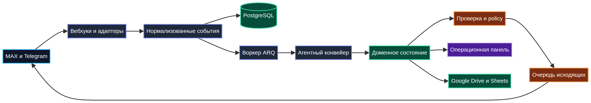

Приходит входящее событиеAn event arrives
Вебхук проверяется и сохраняется без попытки сразу «угадать ответ».
The webhook is verified and stored without trying to guess an answer immediately.
Кейс · AI / Backend · 2026Case study · AI / Backend · 2026
Мультиагентная система для операционных команд: превращает входящие сообщения и документы в проверяемые события, а события — в контролируемые действия.
A multi-agent system for operations teams: it turns incoming messages and documents into auditable events, then turns events into controlled actions.
01
КонтекстContext
Операционная переписка редко остаётся в одном месте: запросы приходят из разных каналов, документы требуют чтения, решения нужно сверять с правилами, а исходящие сообщения нельзя отправлять «на доверии» модели. Commandex разделяет эти обязанности и сохраняет историю каждого шага.
Operational communication rarely stays in one place: requests arrive through multiple channels, documents need reading, decisions must be checked against rules, and outgoing messages cannot be sent on a model’s word alone. Commandex separates those concerns and records each step.
02
АрхитектураArchitecture
Каждый компонент решает одну понятную задачу: принять, сохранить, обработать, проверить или отправить. Поэтому новая интеграция не превращается в переписывание всей системы.
Each component solves one clear job: ingest, store, process, check or deliver. That is why a new integration does not force a rewrite of the whole system.

IngestionIngestionАутентифицирует вебхуки, приводит входящие payload к общей модели и отсеивает дубликаты.Authenticates webhooks, maps payloads to a shared model and filters duplicates.
Agent pipelineAgent pipelineИзвлекает факты, обновляет состояние предметной области и фиксирует намерение системы.Extracts facts, updates domain state and records the system’s intent.
Policy + queuePolicy + queueПрименяет правила риска, запрашивает согласование и только затем ставит действие в доставку.Applies risk rules, requests approval and only then queues a delivery.
03
СценарийScenario
Вебхук проверяется и сохраняется без попытки сразу «угадать ответ».
The webhook is verified and stored without trying to guess an answer immediately.
Тяжёлая обработка отделена от HTTP-запроса: повторные попытки не блокируют приём новых сообщений.
Heavy processing is separated from the HTTP request, so retries do not block new messages.
LLM не получает права на отправку. Его результат — структурированное предложение, которое ещё надо проверить.
The LLM gets no sending rights. Its output is a structured proposal that still needs checking.
Для чувствительных операций система ставит паузу и выводит решение в операционную панель.
For sensitive operations, the system pauses and brings the decision to the operations panel.
Одобренное действие попадает в исходящую очередь, а весь маршрут сохраняется для разбора.
An approved action enters the outbound queue and the entire route is retained for review.
04
Инженерные решенияEngineering decisions
Входящие события имеют ключи дедупликации: повторная доставка вебхука не должна создать вторую задачу или второе сообщение клиенту.
Incoming events have deduplication keys: a repeated webhook must not create a second task or a second client message.
Состояние и намерение фиксируются до внешнего вызова. Это даёт повторяемость, аудит и точку восстановления при сбое провайдера.
State and intent are committed before an external call. That gives repeatability, auditability and a recovery point when a provider fails.
Правила определяют, какие действия можно выполнить автоматически, а какие требуют оператора. Не всё, что система умеет, ей разрешено делать самой.
Rules define which actions can run automatically and which require an operator. The system is not allowed to do everything it can do.
Публичный репозиторий создан с чистой историей: без исходных клиентских ТЗ, токенов, адресов, production-данных и приватных интеграций.
The public repository has a clean history: no client specifications, tokens, addresses, production data or private integrations.
05
Стек и доступStack and access
В публичной версии есть обезличенный README, архитектурная схема, synthetic demo, CI и шаблон окружения. Это не презентационный мокап, а проверяемый срез реальной инженерной системы.
The public edition includes an anonymized README, architecture diagram, synthetic demo, CI and an environment template. It is not a presentation mock-up; it is a reviewable slice of an engineering system.
Перейти в GitHubVisit GitHub↗